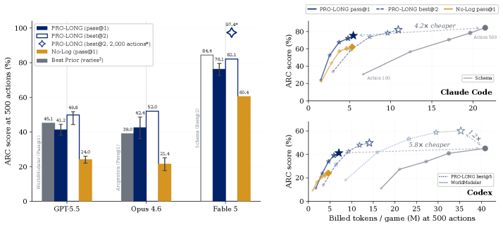

PRO-LONG: Programmatic Memory for Long-Horizon Reasoning
Paper: "PRO-LONG: Programmatic Memory Enables Long-Horizon Reasoning" (arXiv 2607.20064). Authors: Alexis Fox, Junlin Wang, Paul Rosu, Bhuwan Dhingra (Duke). Code and experiment logs are public per the abstract.
TL;DR
- PRO-LONG is an almost embarrassingly minimal memory system for long-horizon agents: append every interaction (plan, action, resulting state, score) to a structured
logs.txt, and let a coding agent query that log on demand with grep/sed/awk/Python. No summarization, no vector store, no learned memory module, no world-model prompt scaffolding. - The design premise: the compression-retrieval tradeoff (save more → find the right detail less reliably) is best sidestepped by not compressing at all — keep history accessible (searchable external memory) rather than accessed (in the ~250K context window), and rely on the agent's existing code-tool competence for retrieval.
- On the 25 public ARC-AGI-3 games it improves over a no-log coding-agent baseline by 18.0 points pass@1 on average across frontier models, and matches or approaches specialized harnesses (WorldModeler, Arcgentica, Schema) while using 4.2-5.8x fewer tokens; with Fable 5 on a 2,000-action budget it reaches 97.4% best@2 for $1,750 total (vs. $6,447 partial cost for Schema's 99.0%).
Why this matters
Long-horizon agents accumulate far more observation than fits in context, and the standard responses are all forms of lossy compression: rolling summaries, self-authored note files, bespoke memory hierarchies, learned retrieval. Each buys token headroom by gambling that nothing discarded becomes decisive later — the classic accessed-vs-accessible tradeoff. For interactive environments like ARC-AGI-3 (unseen video-game-like puzzles where an agent must discover mechanics through hundreds of actions), that gamble is often lost: the observation that mattered is the one summarized away 300 actions ago.
The field's other response has been increasingly elaborate harnesses: WorldModeler makes the agent maintain a Python simulator of the game with a ~600-line prompt and subagents; Arcgentica runs four subagents (Explorer/Theorist/Tester/Solver) over a shared hypothesis database; Schema exposes twelve custom MCP tools and BFS planning. These work but are expensive, game-specialized, and hard to attribute — is the gain from the memory design or the scaffolding?
PRO-LONG is the deflationary baseline this space needed: lossless append-only logging plus the retrieval tools coding agents already have. If that matches specialized harnesses at a fraction of the tokens, most of the machinery in bespoke memory systems is overhead. This resonates with a pattern showing up across this reading list (Continual Learning Bench finding naive ICL beats purpose-built memory systems; "Coding Agents Are Effective Long-Context Processors").
The core idea
Treat history as a database, not as context. The distinction the paper draws is between accessed information — the active context window (~250K tokens) — and accessible information — external memory reachable through tools. Compression-based approaches try to keep everything relevant inside the accessed set. PRO-LONG keeps the accessed set small and makes the accessible set complete and cheaply queryable: a structured, append-only, plain-text log that a coding agent can grep, slice, and analyze with Python exactly the way it navigates a large repo. Retrieval intelligence lives in the agent's existing tool-use policy, not in a retrieval subsystem. Nothing is ever thrown away, so no decision about what will matter later ever has to be made.
How it works
Log structure. After each action, the harness appends a structured entry to logs.txt: a header (action number, level, attempt, score), the agent's summarized plan, the selected action, and the resulting board state. The log is append-only and complete — in one game (g50t) it exceeded 320,000 lines.
The harness cycle, end to end:
# PRO-LONG loop (per turn, within a 500- or 2,000-action budget)
loop:
context <- system prompt + recent turns + workspace # logs.txt NOT in context
agent (Claude Code / Codex) may, any number of times:
grep/sed/awk logs.txt # e.g. find every score-change line
run Python over logs.txt # diff board states, search action seqs
read/write workspace notes
agent emits actions.json # 1-20 actions to execute
environment applies actions; board updates
harness appends one structured entry to logs.txt:
header: action number, level, attempt, score
agent's summarized plan
selected action
resulting board state (+ animation frames [frame N/M], [settled])
Query layer. No custom tooling: the agent uses standard coding-agent affordances — grep/regex, sed/awk, cat/head/tail, and arbitrary Python — against the log file. Example patterns the paper highlights: grep for score-change lines to find the consequential actions of a level; write Python to diff board states around those actions; in game m0r0 the agent spontaneously wrote a world model and ran breadth-first search over 50+ action sequences — i.e., WorldModeler-style behavior emerged from generic tools when useful, rather than being imposed by the harness.
Context policy. Only query results enter the active context; the log itself never does. The agent's own workspace notes turn out to be nearly irrelevant: clearing the workspace between attempts costs 0.5 points (41.2% → 40.7%), so the load-bearing component is the searchable log, not self-authored memory.
Evaluation protocol. 25 public ARC-AGI-3 games; 500-action budget (2,000 for extended Fable 5 runs); 20 actions per turn; scoring via Relative Human Action Efficiency (RHAE, per-level cap 115%); bootstrap confidence intervals.
The scoring and cost metrics are the paper's only formalism (Eqs. 1-2):
where \(h_{l,e}\) and \(a_{l,e}\) are the human-baseline and agent action counts for level \(l\) of game \(e\): each level's score is the squared human/agent efficiency ratio capped at 115%, and the aggregate \(T\) over game set \(D\) weights later levels linearly (weight \(l\), normalized by \(n(n+1)/2\)).
the billed-token formula for Claude models (Codex analogue: \((\mathrm{input}-\mathrm{cached}) + 6\cdot\mathrm{output} + 0.1\cdot\mathrm{cached}\)), which is what the 4.2-5.8x cost comparisons are computed in. Agents: GPT-5.5 in Codex, Opus 4.6 and Fable 5 in Claude Code. Compared harnesses: no-log baseline, WorldModeler, Arcgentica, Schema.
Results

Figure from the paper: "PRO-LONG matches or exceeds state-of-the-art ARC-AGI-3 results at 4.2-5.8x lower token cost. Left: results on the public game set with a 500-action limit, grouped by model and harness. Right: performance versus billed tokens per game."
Numbers from the paper (v2):
- Headline: +18.0 points pass@1 average improvement over the no-log baseline across frontier models (per-model gains for GPT-5.5: 15.7-21.0 points).
- GPT-5.5/Codex: PRO-LONG 41.2% pass@1 vs. WorldModeler 45.1% — while using 5.8x fewer tokens. best@5 reaches 60.1% (+18.9 over pass@1), exposing large run-to-run variance.
- Opus 4.6/Claude Code: 42.4% pass@1 — reported as the best public result for that model.
- Fable 5/Claude Code: 82.1% best@2 at the 500-action budget vs. Schema's 84.4%, at 4.2x fewer tokens than Schema; at the 2,000-action budget, 97.4% best@2 (a lower bound — some games ran once) for $1,750 total (~150M billed tokens), vs. Schema's partial cost of $6,447 for 99.0% best@2 — more than 3x the cost.
- Aggregate token savings: ~400M tokens across the full game set.
- Tool-capability ladder (GPT-5.5): read-only 23.1% → +grep/regex 27.2% → +Python 38.3% → full read/write/edit 41.2%. Programmatic (Python) access to history, not mere retrieval, carries most of the gain.
- Tool-use distribution: with PRO-LONG, 60.6% of calls are Python and 20.3% log-parsing; the no-log agent spends 59.2% of calls on workspace management — i.e., the baseline burns its budget maintaining its own lossy memory.
- Per-game: matches or exceeds no-log on nearly all 25 games; largest gains on long-horizon-dependency games (m0r0: 100% vs. 34.2%); minimal gains where dynamics are immediately visible.
How it connects
This paper is one pole of the memory-and-context-engineering thread in this reading list. Its philosophical opposite is Agentic Context Management (Maximem Synap): ACM says context is a lifecycle problem requiring architected schemas, scoped ingestion, prefetching, and validated compaction; PRO-LONG says for a single long-horizon task, skip the lifecycle — store everything raw and search it. The tension is partly resolved by regime: ACM targets persistent multi-tenant assistants where cost grows across sessions and compaction is unavoidable; PRO-LONG targets bounded-but-long tasks where lossless logs fit on disk and the agent is the retriever. Continual Learning Bench supplies independent evidence for the deflationary view (naive ICL beating memory architectures), as does "Coding Agents Are Effective Long-Context Processors." PageIndex shares the vectorless, structure-plus-reasoning retrieval stance; Memoria (git-versioned memory) and MemPalace are the kind of engineered systems PRO-LONG implicitly challenges to beat a grep baseline. On the other side of the stack, Still and End-to-End Context Compression attack the same accessed/accessible boundary at the KV-cache/architecture level rather than the harness level. There's also a natural RL hook: the paper itself suggests RL to close the pass@1-vs-best@k gap, connecting to the list's agentic-RL cluster (AgentGym-RL, TRACE) — a lossless queryable log is arguably the right substrate for exploration-heavy RL environments too.
Prior-work anchors: this is the ReAct-era coding agent (Claude Code / Codex) repurposed as a memory system; the contrast set is world-model harnesses and multi-agent hypothesis-testing scaffolds on ARC-AGI-3. The "external memory + programmatic access" idea has ancestry in tool-augmented LMs and in neuro-symbolic working-memory systems, but the specific claim — that frontier coding agents make raw logs sufficient — is only testable now that the agents are this good.
Critical take
- Single benchmark, and an unusual one. ARC-AGI-3 games have compact, fully-observable board states, deterministic dynamics, and dense score feedback — close to the best case for "grep the log for score changes." Whether raw-log-plus-Python matches engineered memory on messy long-horizon work (multi-day SWE tasks, web research with huge noisy observations) is untested here. The board state's small serialization is doing quiet work: logging "everything" is cheap when observations are 1-2 KB.
- Confounded model/harness comparisons. PRO-LONG-on-Codex vs. WorldModeler numbers pair different harnesses with the same model, but cross-harness comparisons (Schema vs. PRO-LONG best@2) involve different budgets, partial runs, and — as the authors note — models released after the benchmark, so treat "matches specialized harnesses" as approximately right, not precisely established. The 97.4% is explicitly a lower bound with some single-run games; the 99.0% Schema figure it's compared against cost 3x more.
- Variance is large. An 18.9-point pass@1→best@5 gap for GPT-5.5 means single-run numbers are noisy and exploration failure, not memory, may dominate residual errors. The authors are upfront about this and report both.
- It's a harness result, not a learning result. Nothing is trained; gains ride entirely on frontier models' code-tool competence. Weaker models presumably benefit less (the paper evaluates only frontier agents), and the approach inherits frontier-API costs — $1,750 for one benchmark sweep is "cheap" only relative to $6,447.
- Open questions: where does the log-scan cost curve cross compaction's? (At 320K lines, grep is fine; at 100M lines of browser DOM dumps, less clear.) Can the log schema itself be learned or task-adapted? Does combining a lossless log with light consolidation (indexes, not summaries) dominate both poles?
If you remember three things
- Lossless, structured, append-only logs + a coding agent's native query tools beat or match bespoke memory harnesses on ARC-AGI-3 at 4.2-5.8x fewer tokens — +18.0 pass@1 over a no-log baseline across frontier models.
- The mechanism is the accessed/accessible split: keep context small, keep history complete and programmatically queryable — the tool-ladder ablation shows Python access (not just retrieval) carries the gain (23.1% → 38.3% → 41.2%).
- Before building a memory architecture, run the grep baseline — this paper, Continual Learning Bench, and the long-context-processor results all point the same direction: much of current memory-system machinery is overhead that frontier tool-using agents no longer need in bounded-task regimes.